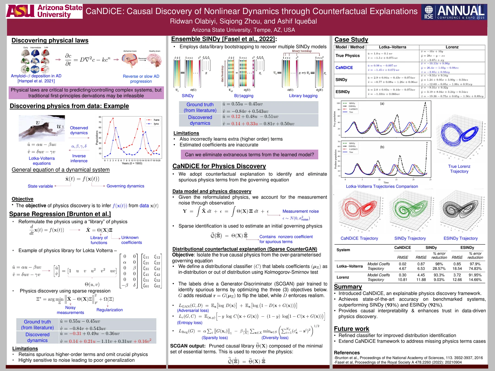
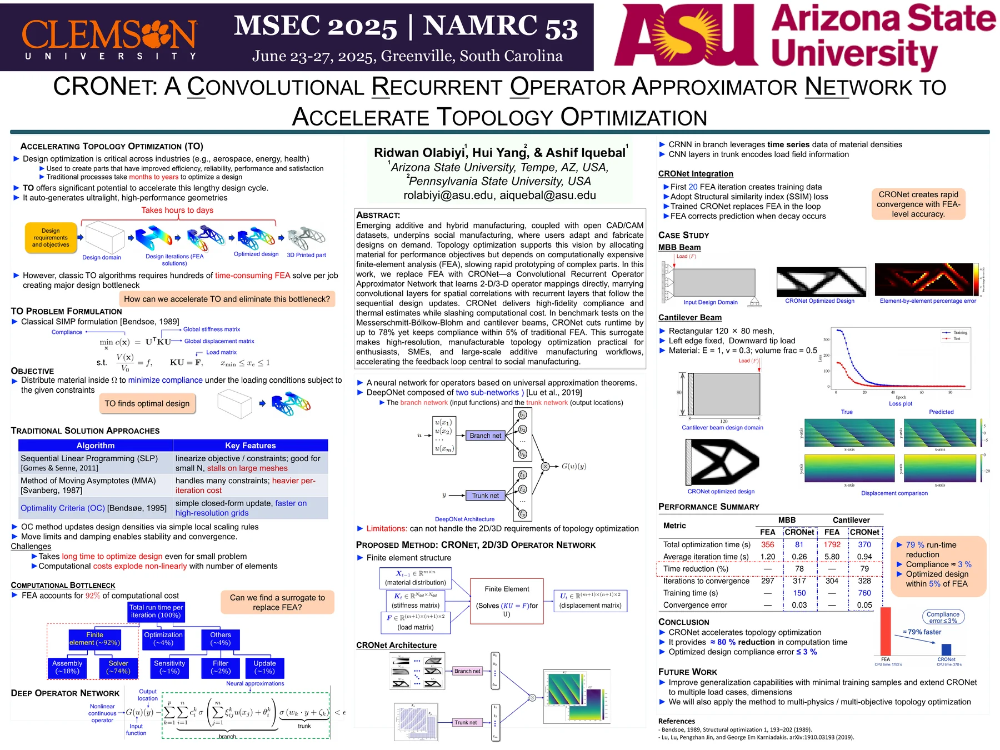
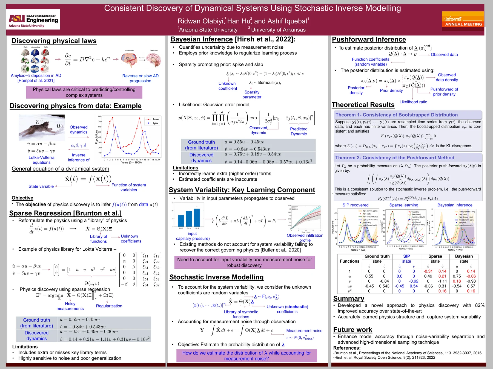
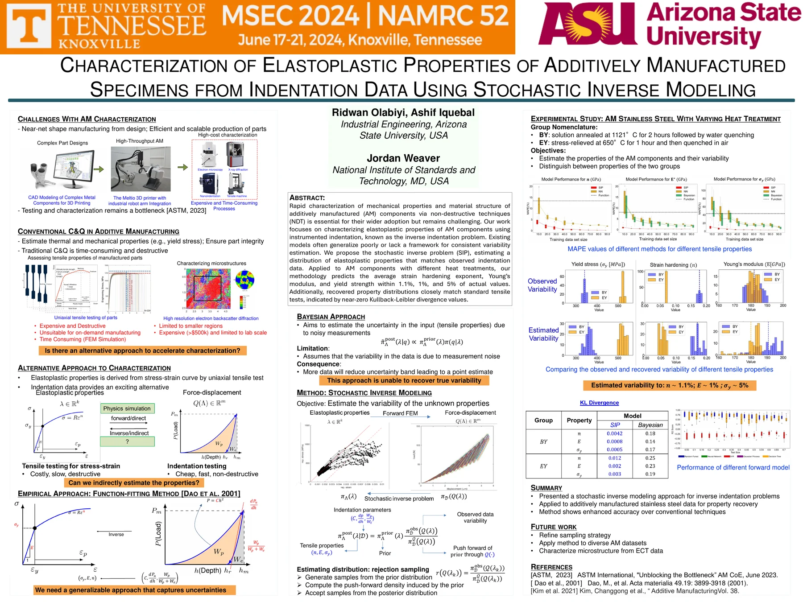
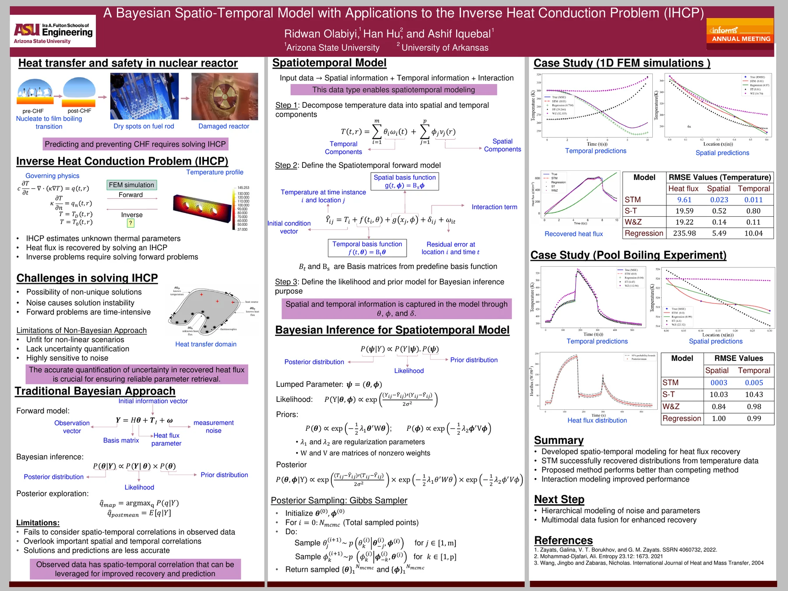

CAUSAL DISCOVERY
Research talks, poster presentations, competition showcases, and educational presentations spanning scientific machine learning, inverse problems, manufacturing, engineering analytics, and graduate preparation.
Causal Discovery of Nonlinear Dynamics Through Counterfactual Explanations. Scheduled in the invited Data Mining session Data-Driven Modeling and Scientific Discovery in Complex Systems, which I am co-organizing with Yuhao Zhong. Wednesday, November 4, 2026.
Stochastic Inverse Modeling for Rapid Elastoplastic Property Characterization of Additively Manufactured Components. Accepted for presentation at the 2026 INFORMS Annual Meeting.
CaNDiCE: Causal Discovery of Nonlinear Dynamics through Counterfactual Explanations. Presented in the invited session Data-Driven Discovery: Integrating Statistics and AI for Scientific Insights on October 29, 2025.
CRONet: A Convolutional Recurrent Operator Approximator Network to Accelerate Topology Optimization.
Presented technical research on enhanced characterization of elastoplastic properties using stochastic inverse modeling.
Presented advanced material-characterization and stochastic inverse-modeling research.
Consistent Discovery of Dynamical Systems Using Stochastic Inverse Modeling. Presented as a finalist in the INFORMS Quality, Statistics & Reliability Best Student Paper Competition.
Characterization of Elastoplastic Properties of Additively Manufactured Specimens from Indentation Data Using Stochastic Inverse Modeling.
A Bayesian Spatio-Temporal Modeling Approach to the Inverse Heat Conduction Problem. Technical presentation.
A Bayesian Spatio-Temporal Modeling Approach to the Inverse Heat Conduction Problem.
A Stochastic Formulation and Solution Approach to the Inverse Indentation Problem.
Minimal Subset Learning in Federated Smart Manufacturing.
Nonlinear Dynamics System Identification from Data: Solution Methodology and Algorithmic Design Using Bayesian Technique.
Effect of Rock Size, Depth, and Diameter on the Treatment Efficiency of the Trickling Filter.
CaNDiCE: Causal Discovery of Nonlinear Dynamics through Counterfactual Explanations. Presented in the Quality Control and Reliability Engineering (QCRE) Best Student Poster Competition.
CRONet: A Convolutional Recurrent Operator Approximator Network to Accelerate Topology Optimization. Poster presentation at the co-located manufacturing research conferences.
Presented a research poster as part of Purdue University's Trailblazers in Engineering future-faculty workshop.
Consistent Discovery of Dynamical Systems Using Stochastic Inverse Modeling. Poster presentation accompanying my 2024 INFORMS research activities.
Characterization of Elastoplastic Properties of Additively Manufactured Specimens from Indentation Data Using Stochastic Inverse Modeling. Poster presentation in addition to the technical conference presentation.
A Bayesian Spatio-Temporal Model with Applications to the Inverse Heat Conduction Problem (IHCP). Presented in the INFORMS Quality, Statistics & Reliability poster competition.
A Bayesian Spatio-Temporal Model with Applications to the Inverse Heat Conduction Problem (IHCP). Presented in the SCAI AI Day research poster session.
A visual selection of posters representing the progression of my research from Bayesian inverse problems and stochastic material characterization to governing-physics discovery, scientific machine learning, and causal discovery. Click any poster to open the full-resolution PDF.





My team (Team RAV) presented our data-driven manufacturing solution in the challenge final and received First Place and the separate Best Presentation Design Award.
My team (Team RAV) presented Machine Learning for Static Voltage Drop Prediction and won Problem D in the challenge.
Participated in team-based business and presentation exercises during the Venture in Management Programme, including recognition for advertising ideas and presentation.
Returned as a resource person/panelist to share GRE and TOEFL/Duolingo preparation strategies, study resources, and guidance for U.S. graduate-school applications.
Invited to deliver a 45-minute presentation on Acing the GRE and TOEFL/Duolingo: Test-Taking Strategies, sharing preparation methods, study resources, and practical guidance for prospective graduate students.
Co-organizing Data-Driven Modeling and Scientific Discovery in Complex Systems in the Data Mining cluster. I am also presenting Causal Discovery of Nonlinear Dynamics Through Counterfactual Explanations in the session.
Chaired the invited session Data-Driven Discovery: Integrating Statistics and AI for Scientific Insights, where I also presented CaNDiCE: Causal Discovery of Nonlinear Dynamics through Counterfactual Explanations.
Chaired an Additive Manufacturing technical session.
Chaired the Data Mining session Data-driven Models for Scientific Discovery.